With the benefits of plant-based eating becoming more pronounced and impactful, it’s no wonder that so many have adopted this type of lifestyle. A growing community of vegans and vegetarians means more demand for high-quality plant-based products that deliver on both nutrition and taste. Gone are the days of boring vegan foods; food manufacturers and even restaurants and fast-food chains are taking notice and bringing innovation to this expanding food category. Experts in the Good Housekeeping Institute's Nutrition Lab test thousands of food products year round to give you the best of the best on both quality and taste. When determining which vegan products made the cut for this year's list, we focused on best-in-class ingredient lists, flavor and innovation. Check out the best vegan food products of 2021, handpicked by Registered Dietitians and taste testers:
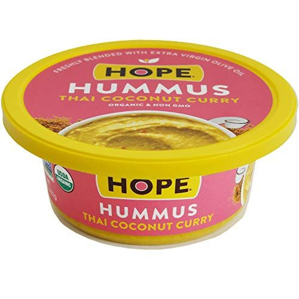
1
GOOD FOODS
Plant Based Queso Style Dip
Buy
Good Foods uses high-quality fresh ingredients to make incredible dips, dressings and more. Their chunky guacamole is not to be missed, but this plant-based queso style dip delivers on both nutrition and taste. Completely dairy-free, ingredients in this top pick include cauliflower, red bell pepper, almonds, nutritional yeast and more. Pair it with chips, pretzels or your favorite veggies for a satisfying vegan snack.
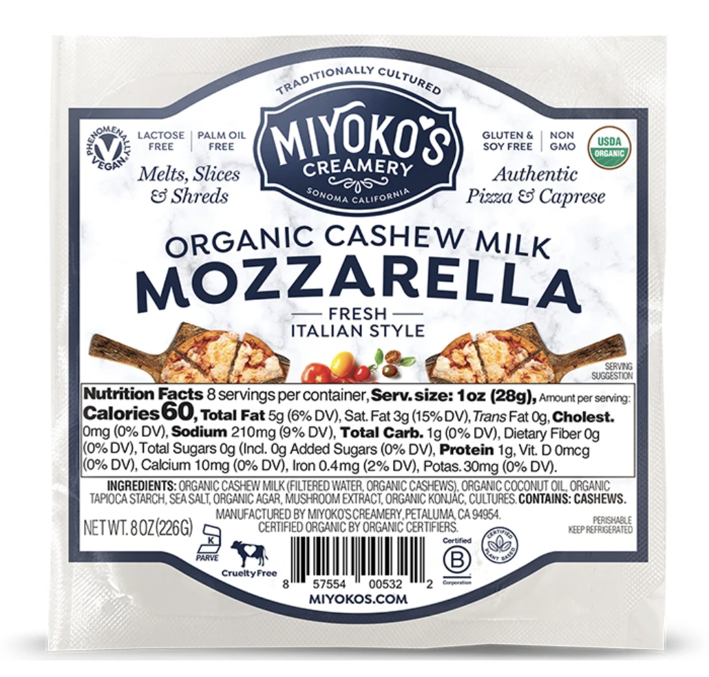
2
MIYOKO'S CREAMERY
Organic Cashew Milk Mozzarella
BUY
This vegan take on mozzarella features organic cashew milk as the first main ingredient. Miyoko's in general makes an excellent line of vegan dairy alternatives, and this cheese has great flavor and impressed us with how it looks and performs like traditional mozzarella. Enjoy it melted on homemade pizza or chopped in fresh bruschetta.
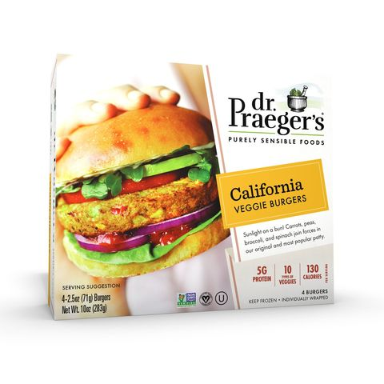
3
DR. PRAEGER'S
California Veggie Burgers
buy
We're dubbing this pick the unofficial king of veggie burgers. Packed with real vegetables like carrots and string beans, our nutrition experts appreciate the real whole foods ingredient list and the fact that this burger is packed with 10 different kinds of veggies. Not only does this choice cook up well and boast great flavor, but it makes for a satisfying option in a pinch.
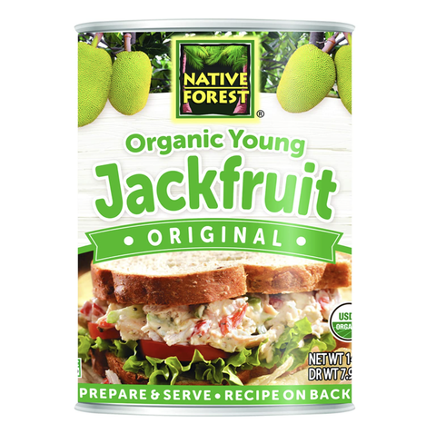
4
NATIVE FOREST
Organic Jackfruit
buy
This large tropical fruit is a favorite meat substitute in vegan cooking. Jackfruit packs in a ton of nutritional benefits including an excellent source of fiber, but many appreciate that it can be cooked or shredded like chicken or pork in several different vegan dishes. The green kind that's usually found canned has a neutral flavor, allowing it to take to all different kinds of seasonings (BBQ jackfruit sandwich anyone?).
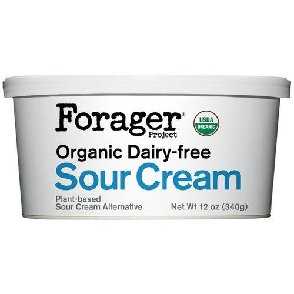
5
FORAGER PROJECT
Organic Dairy-Free Sour Cream
buy
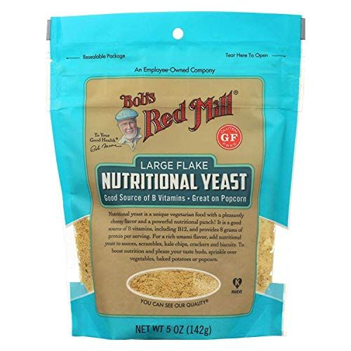
6
BOB'S RED MILL
Large Flake Nutritional Yeast
buy
Nutritional yeast is made with an inactive form of the yeast saccharomyces cerevisiae. This highly nutritious vegan staple is tasty and has a rich cheese-like flavor. Plus, it's a good source of B vitamins and most nutritional yeast on the market has been fortified with B12 (like this one from Bob's Red Mill), making it popular for vegetarians and vegans. Try it sprinkled on popcorn, pizza and pasta.
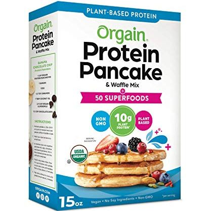
7
ORGAIN
Protein Pancake & Waffle Mix
buy
Orgain offers a variety of vegan and non-vegan shakes and powders packed with protein. Their new line of protein pancake mixes are fully plant-based and USDA organic. In addition to their whole wheat & oat variety and their gluten-free mix option, this 50 superfoods mix packs in tons of fruits and veggies but doesn't sacrifice on flavor or texture. There is a vegan preparation option on the box that just requires water.
8
HOPE FOODS
Organic Thai Coconut Curry Hummus
buy
We love the fresh ingredients and bold flavor profiles of the plant-based dips and spreads by Hope Foods. They use cold, high pressure to help retain fresh flavors and optimize nutrition and texture without the use of artificial preservatives. This Thai Coconut Curry hummus is creamy, USDA organic and seriously tasty, perfect for dipping with veggies or spread on your favorite pita. Other products include hummus, guacamole and cashew and almond dips, all of which are vegan. Their latest additions include Avocado Lime Hummus and Vanilla Bean Cashew & Almond Dip.
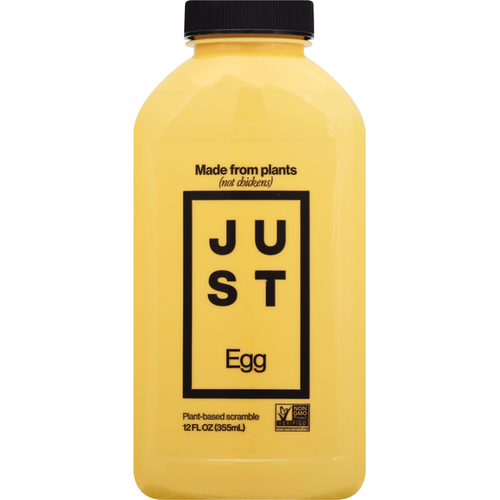
9
JUST EGG
Plant-Based Scramble
buy
Eggs are a huge breakfast staple, making them one of the hardest foods for many vegans to give up. But JUST Egg delivers a perfect plant-based replacement made from mung beans that packs in a similar amount of protein to regular eggs without any cholesterol. This option performs just like scrambled eggs, and their new Sous Vide bites are bursting with flavor.
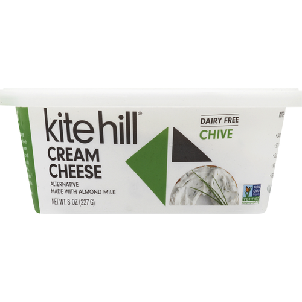
10
KITE HILL
Dairy Free Chive Cream Cheese
buy
A top-performer in the Good Housekeeping Test Kitchen, this chive dairy-free cream cheese alternative features a perfect blend of chives and white pepper. Almond milk is the first ingredient, and a two-tablespoon serving only has 60 calories. Their everything cream cheese alternative is a hit as well, perfect on a bagel or slice of toast.
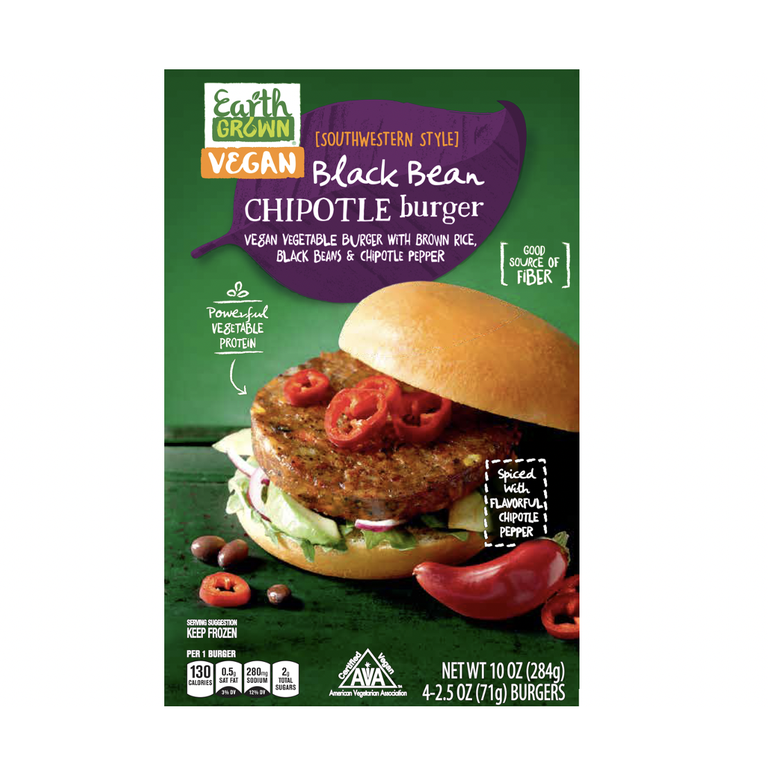
11
ALDI
Earth Grown Vegan Black Bean Chipotle Burger
buy
GH Seal Star ALDI Earth Grown offers an innovative line of vegan and vegetarian options at a competitive price point. This black bean chipotle burger is certified vegan, packed with fiber and bursting with flavor. Enjoy it on a bun with avocado and roasted peppers or chopped in your favorite taco.
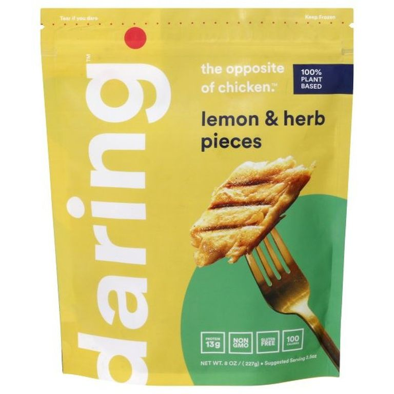
12
DARING
Lemon & Herb Pieces
buy
You'll be shocked by this 100% plant-based chicken alternative that looks and tastes similar to the real thing. Our testers noted that it was very easy to prepare, had simple instructions and came out super crispy even when cooked on the stove. In our tests, the lemon & herb flavor was a favorite. This pick is also gluten-free, packed with 13 grams of protein and 5 grams of fiber per serving.
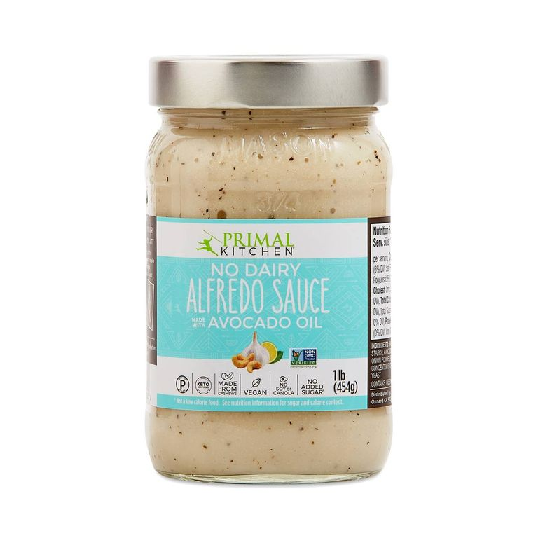
13
PRIMAL KITCHEN
No Dairy Alfredo Sauce
buy
This creamy dairy-free alfredo sauce is made with top quality ingredients like cashew butter and avocado oil. It's also free from added sugar and Non-GMO Project Verified. The regular alfredo sauce is our favorite and has a bright lemon flavor as well, perfect for pairing with your favorite pasta.
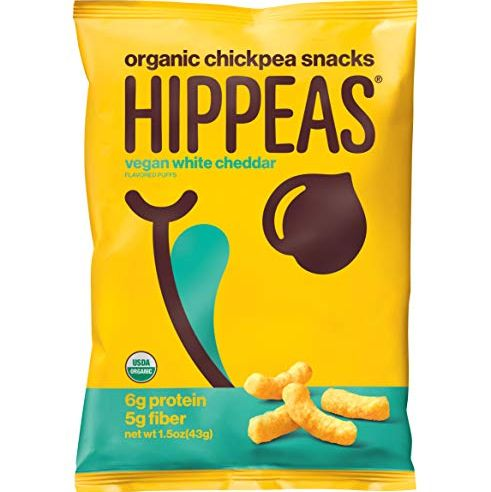
14
HIPPEAS
Organic Chickpea Snacks Vegan White Cheddar
buy
These award-winning puffs are completely vegan and use chickpea flour at the main ingredient. This USDA organic choice is a good source of fiber per serving and packs in plant-based protein too. Testers love the crunchy texture on this snack. One tester said, "the cheese taste is so spot on... I'm shocked they are vegan."
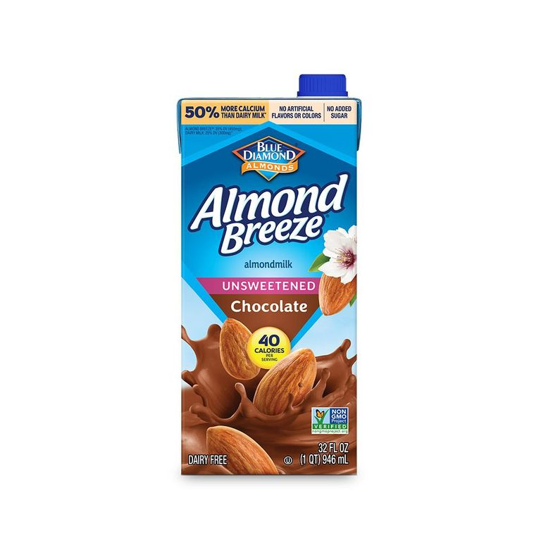
15
BLUE DIAMOND
Almond Breeze Unsweetened Chocolate Almondmilk
buy
Missing chocolate milk? GH Nutritionist Approved Almond Breeze Unsweetened Chocolate Almondmilk packs in a rich chocolatey flavor thanks to cocoa without any added sugar. This vegan beverage is also shelf-stable, making it the perfect pantry staple. Enjoy it on its own or add to your morning cereal for a decadent twist that is sure to cure cravings.
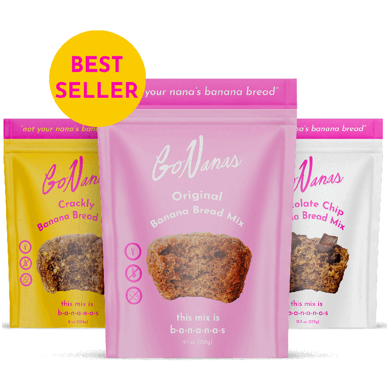
16
GONANAS
Banana Bread Mix Variety Pack
buy
Your favorite comfort food just got a serious makeover. This woman-owned business uses real, simple ingredients and offers a variety of banana bread mixes that are all vegan, nut-free and gluten-free. Just add a few ingredients you probably already have on hand, like bananas, maple syrup, oil and plant-based milk. Mix it all together, add to a loaf pan or muffin tin and bake. This is a fun activity the whole family can participate in too.
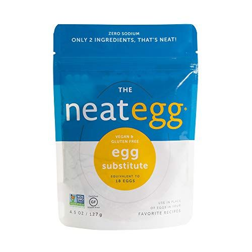
17
NEAT
Egg Substitute Mix
buy
This easy egg substitute mix made from chia seeds and garbanzo beans is a vegan bakers dream. For any baked good recipes that require eggs as a binder, use this egg substitute for a vegan alternative. Don't mistake this with a vegan scrambled eggs option though; this mix is solely for binding purposes.
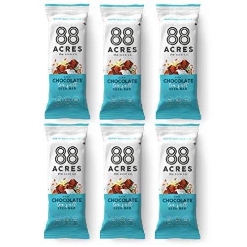
18
88 ACRES
Dark Chocolate Sea Salt Seed Bar
buy
These nutritious bars use a special seed blend that features organic pumpkin seeds, organic sunflower seeds and ground flax seeds. All of 88 Acres products are vegan and also made in a facility that is free from the top eight major allergens including peanuts, tree nuts, dairy, eggs, fish, shellfish, wheat and soy. Their facility also does not process sesame, mustard or sulfites.
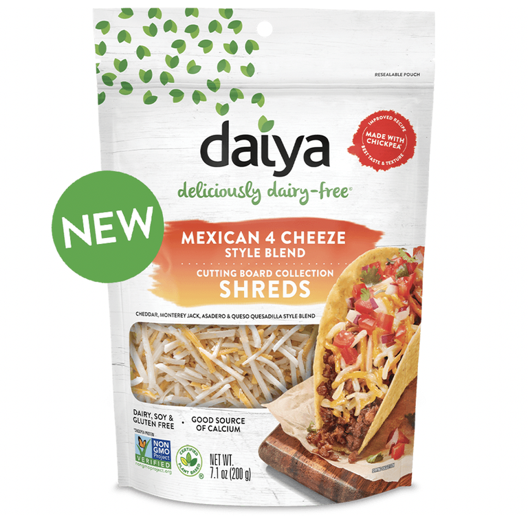
19
DAIYA
Mexican 4 Cheeze Style Blend
buy
This dairy-free cheese blend combines four plant-based cheeses together including Cheddar, Monterey Jack, Asadero and Queso Quesadilla flavored shreds. We found it melted perfectly and also paired well on tacos and in quesadillas. Ingredients include coconut oil and chickpea protein, free from soy and also Non-GMO Project Verified.
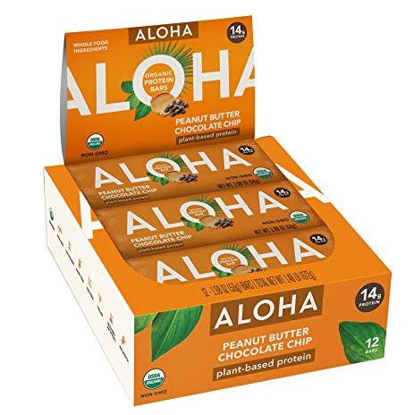
20
ALOHA
Plant Based Protein Bars
buy
This vegan protein bar provides half your day's worth of fiber and tastes great too. Free from sugar alcohols and stevia, this choice is also USDA organic and packs in 14 grams of plant-based protein. Testers like that it isn't chalky or artificial-tasting like other vegan protein bars on the market.

21
ITHACA
Lemon Garlic Hummus
buy
Our experts rave about the exceptional flavor, texture and real ingredients that Ithaca Hummus delivers in all of its varieties. The lemon garlic hummus is a classic that can't be beat. This fresh-tasting hummus uses a special cold pasteurization technique instead of adding preservatives, which contributes to its best-in-class flavor and quality.
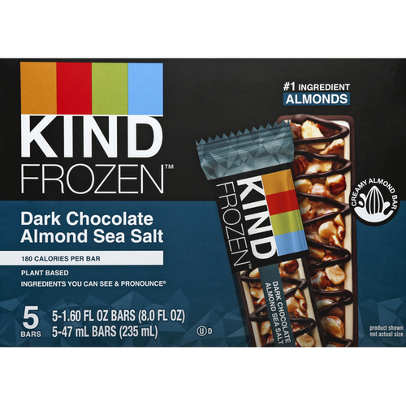
22
KIND
FROZEN Dark Chocolate Almond Sea Salt
buy
Unlike most shelf-stable KIND bars, this frozen variety is free from honey. We like that almonds are the first ingredient and that one delectable bar only has 7 grams of added sugar. You'll love the layers of smooth dark chocolate, chopped almonds and nut butter. For a frozen sweet treat, this really hits the spot.
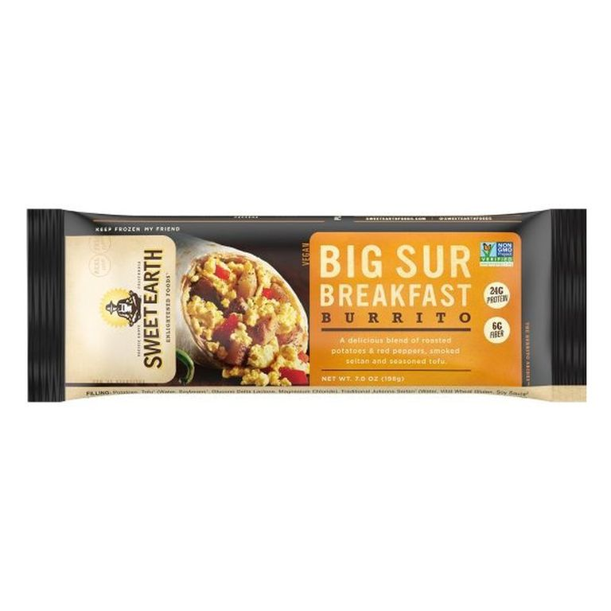
23
SWEET EARTH
Big Sur Breakfast Burrito
buy
This hearty vegan breakfast burrito packs in 24 grams of protein and 6 grams of filling fiber. Smoky seitan and seasoned tofu are used instead of eggs, alongside potatoes and roasted red peppers. This frozen vegan staple makes for a convenient and delicious on-the-go breakfast that will keep you full for hours.
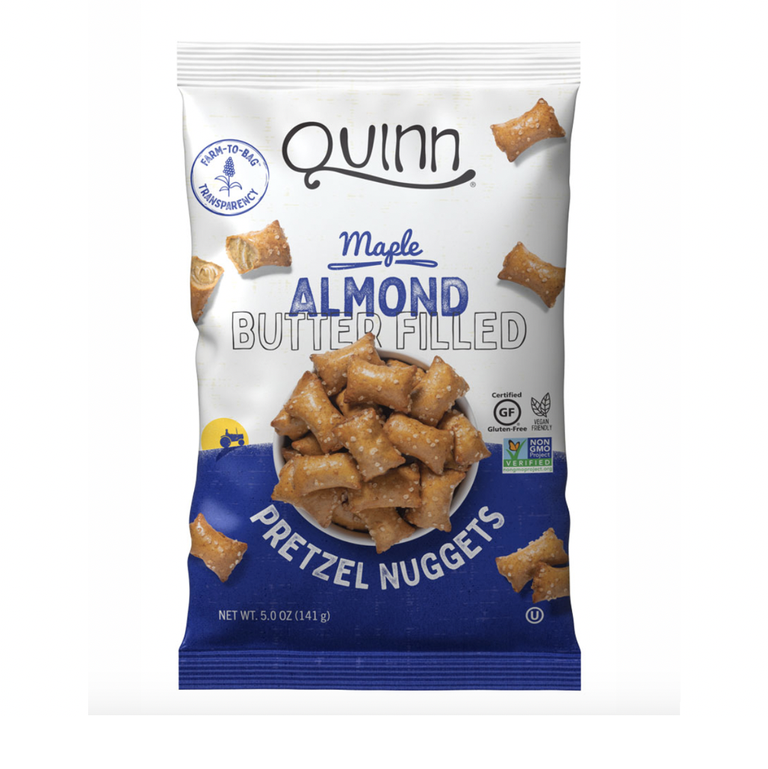
24
QUINN
Maple Almond Butter Filled Pretzel Nuggets
buy
The newest addition to the Quinn family, these Certified Gluten-Free and Non-GMO Project Verified pretzel nuggets make a satisfying snack. Most flavored pretzel varieties use honey, but this choice is lightly sweetened with Vermont maple syrup making them totally vegan. We like that this yummy snack is crunchy on the outside and features creamy almond butter on the inside.
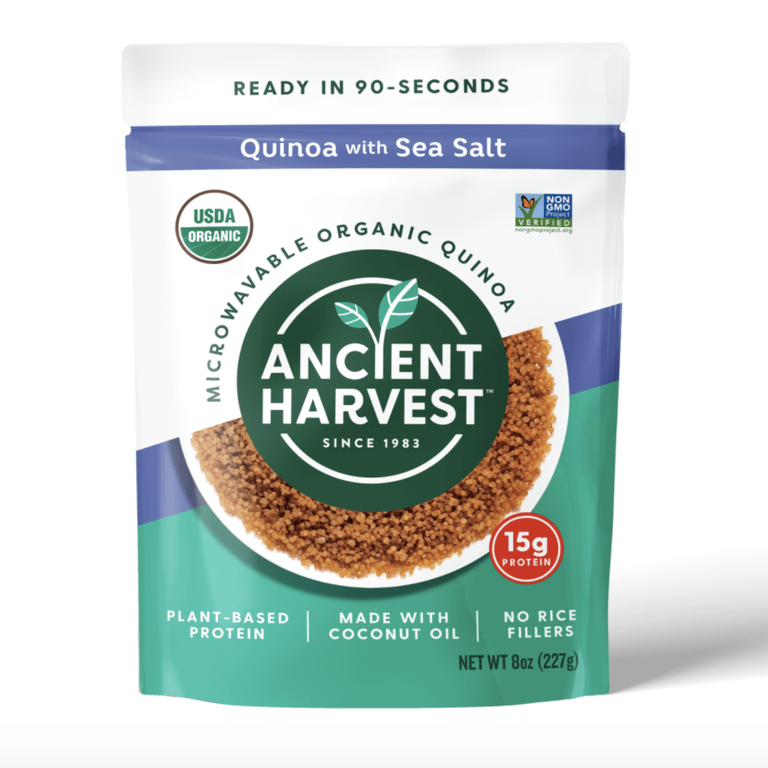
25
ANCIENT HARVEST
Microwavable Organic Quinoa with Sea Salt
buy
Quinoa is actually a complete protein, making it a popular choice for vegans and vegetarians as it contains all nine essential amino acids. This convenient microwaveable pack features minimal ingredients and is prepared in 90 seconds. Use it as the base of a homemade grain bowl or in your favorite breakfast quinoa recipe. Plus, it's also available in a variety of flavors like southwestern, and chickpeas and garlic.
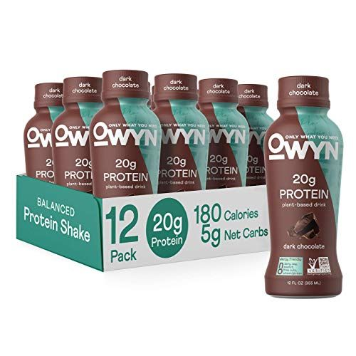
26
OWYN
100% Vegan Plant-Based Protein Shakes
buy
Our experts love the smooth, creamy consistency and rich flavor on these Certified Vegan protein shakes that provide 20 grams of plant-based protein per bottle. Made from a protein blend of organic pea protein, organic pumpkin seed protein and organic flax oil, this choice is also Certified Gluten-Free and Non-GMO Project Verified. Plus, this shake is rich in fiber making for a filling snack.
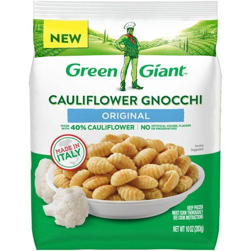
27
GREEN GIANT
Original Cauliflower Gnocchi
buy
In many standard gnocchi and cauliflower gnocchi recipes, eggs and dairy are utilized. But GH Nutritionist Approved Green Giant Cauliflower Gnocchi has best-in-class texture and flavor that is completely vegan too. We love that the gnocchi is made with 40% cauliflower and free from artificial colors, flavors or preservatives. Pro tip: Try preparing them in the air fryer for an extra crunchy gnocchi.
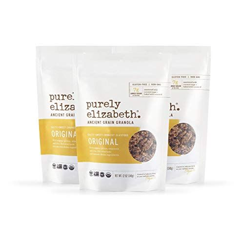
28
PURELY ELIZABETH
Original Ancient Grain Granola
buy
A standout in our granola tests, Purely Elizabeth delivers unbeatable flavor and texture on their ancient grain granola varieties. Best of all, their ingredient lists are truly superb. Packed with real whole foods and minimal added sugar counts compared to most granola brands, this pick is perfect on its own or sprinkled over non-dairy yogurt.
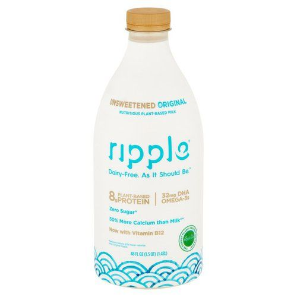
29
RIPPLE
Pea Milk, Unsweetened Original
buy
Most non-dairy milks offer little to no protein, but this smooth pea milk is 100% plant-based and boasts 8 grams of protein per cup. It's an excellent source of calcium and vitamin D, and even is fortified with 32mg DHA omega-3s from algal oil to support brain health. This nut-free offering is also soy-free and gluten-free.
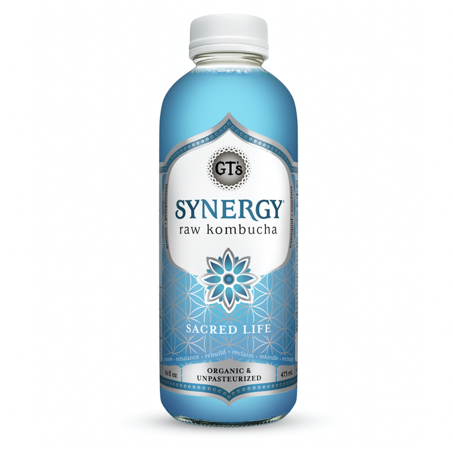
30
GT'S
Synergy Raw Kombucha, Sacred Life
buy
Kombucha is a fantastic vegan source of probiotics for those who can't have dairy products. Our experts like GT's Raw Kombucha varieties since they are made from quality ingredients and often have little to no added sugar. This colorful variety uses raw coconut water and blue spirulina for its natural blue hue.
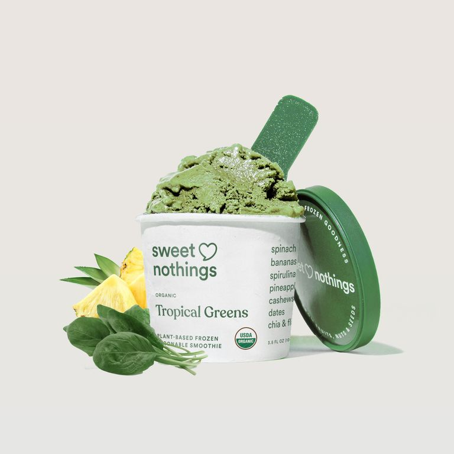
31
SWEET NOTHINGS
Tropical Greens
buy
A top pick in our best dairy-free ice creams test, Sweet Nothings is a cross between a frozen smoothie and ice cream blend that uses wholesome ingredients like fruits, nuts, dates and chia seeds. Their newest flavor offering is super refreshing and packed with quality ingredients in a portion-controlled cup with a small spoon inside, making it great for on-the-go or serving as a better-for-you snack to kids.
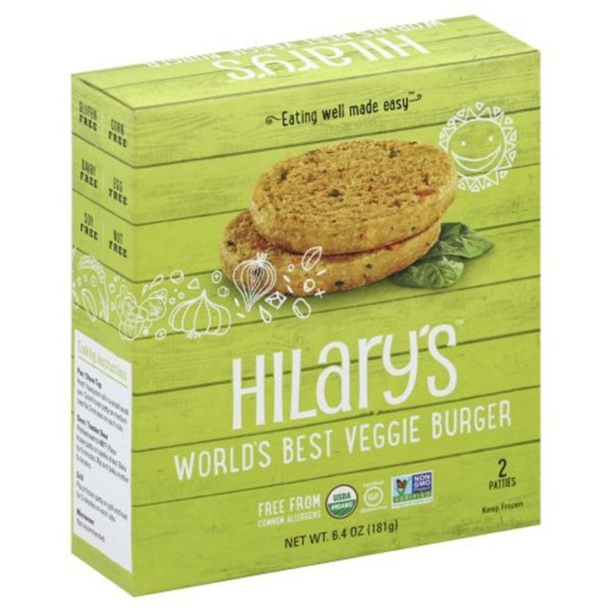
32
HILARY'S
World's Best Veggie Burger
buy
Plant-based foodies will love this USDA organic veggie burger that's also Certified Gluten-Free and Non-GMO Project Verified. Made from real ingredients like whole grain millet, leafy greens and sweet potato, this pick is also free from the top 12 common food allergens. Their organic spicy veggie meatless breakfast sausage also boasts a stellar ingredients list, but we prefer the flavor on the veggie burger line.
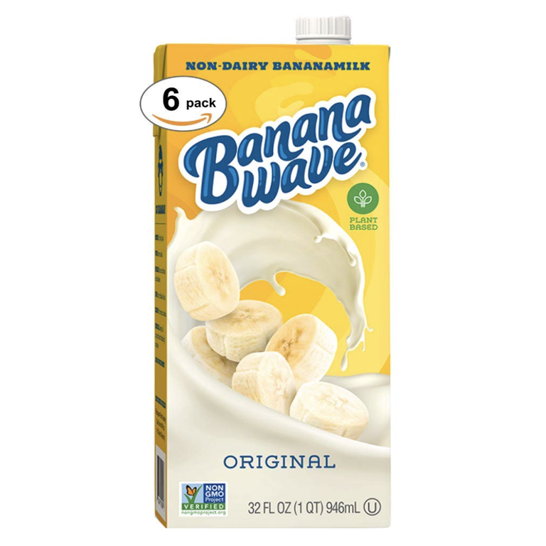
33
BANANA WAVE
Original Non-Dairy Bananamilk
buy
This low-calorie shelf-stable beverage is made from real bananas and oats. Packed with vitamins and minerals, this plant-based drink is also fat-free and cholesterol-free. This choice is Non-GMO Project Verified and has a powerful banana flavor that works well over cereal or in smoothies.